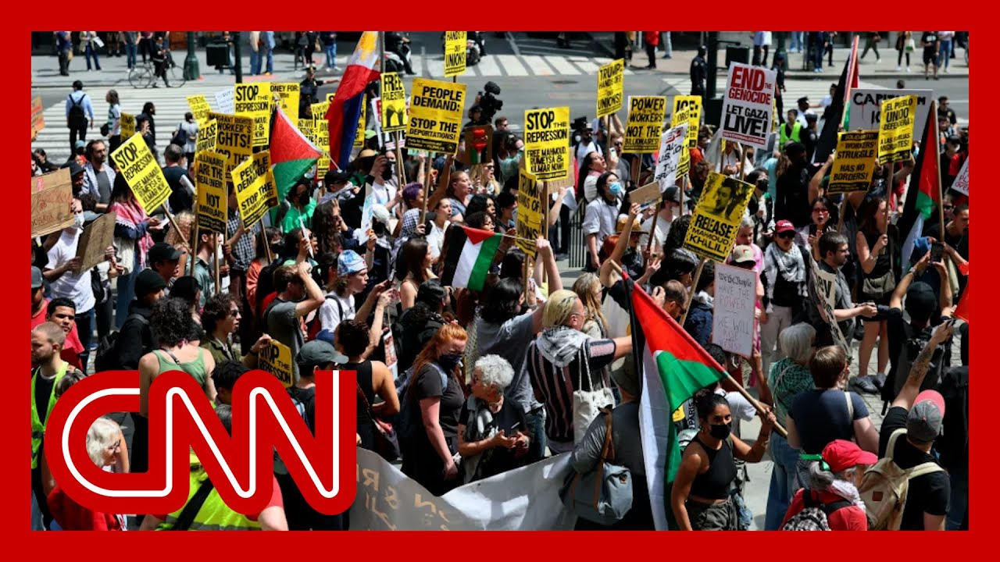

来B站一起耍【Global每日英语简报】
【反特朗普的“五一”抗议活动在东西海岸爆发】
Summary: We have been covering May Day protests across the country, demonstrations against Trump administration policies, including on immigration. They are playing out across the United States.
摘要： 我们一直在报道全国各地的五一抗议活动，这些示威活动针对特朗普政府的政策，包括移民政策。这些抗议正在美国各地展开。

⏱️ Estimated Reading Time: 14 min
We have been covering May day protests across the country, demonstrations against Trump administration policies, including on immigration.
我们一直在报道全国各地的五一抗议活动，这些示威活动针对特朗普政府的政策，包括移民政策。
They are playing out across the United States.
这些抗议正在美国各地展开。
CNN's Danny Freeman is joining us from Philadelphia, Pennsylvania.
CNN的丹尼·弗里曼正在宾夕法尼亚州费城与我们连线。
Clearly, amid the crowd there, D what have you seen?
显然，在人群中，丹尼，你看到了什么？
And that we do not see, frankly, today here in Philadelp and across the country, a lot of crowds were right here in front of City Hall.
坦率地说，今天在费城和全国各地，我们没有看到很多人群聚集在市政厅前。
And we're actually watching what Bernie Sanders, who's been speaking at the microphone for a number of minutes right no
我们实际上正在观看伯尼·桑德斯，他已经在麦克风前演讲了几分钟。
He has been rallying folks here.
他一直在动员这里的人们。
This event here is sponsored by the AFL CIO.
这次活动由美国劳工联合会-产业工会联合会（AFL-CIO）赞助。
He's been speaking very strongly in favor of unions in favor of workers rights as we
他一直在强烈支持工会和工人权利。
And then the past, I would say 5 to 10 minutes.
而在过去的5到10分钟里。
He's been returning to the refra that we've heard him in Alexandria Ocasio-Cortez, the congressman from New York, speaking out for a number of wee
他一直在重复我们听到的亚历山德里娅·奥卡西奥-科尔特兹（纽约州国会议员）几周前发表的言论。
He's talking about the perils and dangers of the oligarchy.
他谈到了寡头政治的危险和威胁。
And that really tells you a lot about what the tone of these rallies have b
这确实让你对这些集会的基调有了很多了解。
This country, a lot of people here, not just to support unions and labor movements, but also a lot of people here clearly voicing their frustratio at President Donald Trump and the Trump administration.
在这个国家，这里有很多人不仅是为了支持工会和劳工运动，还有很多人明确表达了对总统唐纳德·特朗普和特朗普政府的不满。
I won't go too far out, just as there's a lot of profanity on the signs but I'm seeing a lot of signs.
我不会走得太远，因为标语上有很多脏话，但我看到了很多标语。
I'm a history teacher. This is fascism.
我是一名历史老师。这是法西斯主义。
I'm seeing signs for due process Stop Trump and stop the oligarch
我看到标语写着“正当程序”、“阻止特朗普”和“阻止寡头”。
These are the kind of scenes that we're seeing again, not just here in Philadelphia, but all across the country today, in honor of May day, I'll just tell you right now, there are a couple thousand people out here.
这些是我们再次看到的场景，不仅是在费城，今天在全国各地，为了纪念五一节，我现在告诉你，这里有几千人。
This is a pretty big crowd when it comes to Philadelphia ra
就费城的集会而言，这是一个相当大的 crowd。
I've been to a number of them.
我参加过很多次这样的集会。
clearly Bernie Sanders, one of the main draws here.
显然，伯尼·桑德斯是这里的主要吸引力之一。
And a lot of people were telling me earlier that the reason they came here is not just to support Bernie Sa
很多人早些时候告诉我，他们来这里的原因不仅是为了支持伯尼·桑德斯。
not just to make their voices heard against the Trump administ
不仅是为了让他们的声音被听到，反对特朗普政府。
but also to show that they are h
也是为了表明他们很愤怒。
They are not afraid, and they are willing to take to the streets specifically to make their voice heard when it comes to, again, protesting the Trump administrat
他们并不害怕，并且愿意走上街头，特别是在抗议特朗普政府时，让他们的声音被听到。
So this rally, like I said, you just saw Bernie Sanders.
所以这次集会，就像我说的，你刚刚看到了伯尼·桑德斯。
He just walked off the stage.
他刚刚走下舞台。
The rally here is going to conti
这里的集会将继续进行。
likely for about an hour or two a lot of people here at the mome
可能会持续大约一两个小时，现在这里有很多人。
and we're expecting more rallies and protests throughout the evening and after
我们预计今晚和之后还会有更多的集会和抗议活动。
Again, not just here, but also across the country.
同样，不仅在这里，而且在全国各地。
Right. Danny Freeman, with whom I have countless crowds, listening to Bernie Sanders as speaker here, is probably don't know that, Danny, but we covered the 2016 Bernie Sanders campaign together
是的。丹尼·弗里曼，我和他一起报道过无数次 crowd，听伯尼·桑德斯在这里演讲，可能不知道这一点，丹尼，但我们一起报道了2016年伯尼·桑德斯的竞选活动。
Thank you to Danny.
谢谢丹尼。
Congresswoma this of course, at your party, there's a saw a lot in that crow
国会议员，当然，在你的党派中，在那个 crowd 中看到了很多。
You know, flags for Palestine, but also, of course, anti-Trump.
你知道，有巴勒斯坦的旗帜，当然也有反特朗普的。
as Danny noted, a lot of people for Bernie Sanders, which leaders in the Democratic do you think have it right, right now in terms of pushing ba against Donald Trump?
正如丹尼指出的，很多人支持伯尼·桑德斯，你认为民主党的哪些领导人在对抗唐纳德·特朗普方面做得对？
It's a good question, and I'll be honest, I'm really proud of House Democrats.
这是一个好问题，老实说，我为众议院民主党人感到非常自豪。
I think that we have done a real like a making sure that we're talking about all the holding them accountable in the we're having for this budget res
我认为我们确实做到了确保我们在谈论所有的事情，让他们在这个预算决议中负责。
I like to tell my constituents that we're playing zone defense, not man to man.
我喜欢告诉我的选民，我们在打区域防守，而不是人盯人。
Right. So it's not necessarily each individual Democrat doing everything, but all togeth
是的。所以并不是每个民主党人都在做所有的事情，而是大家一起。
We're pushing back on every fron
我们在每一个方面都在反击。
of course the numbers at Christmas total Sanders during our poll for congressional Democratic leaders not great.
当然，在我们的民意调查中，国会民主党领导人的支持率在圣诞节期间对桑德斯的总和并不高。
It was like 72% don't approve, 62% don't approve of Republican congressional, leaders.
大约72%的人不赞成，62%的人不赞成共和党的国会领导人。
It's kind of a mess all around, but really, really bad for Democ
这有点一团糟，但对民主党来说真的非常糟糕。
this, of course, as you know, one of the things that's a struggle for any party out of power, especially in the wake of a loss is finding a messenger, especially in our celebrity driven politics.
当然，正如你所知，对于任何失去权力的政党来说，尤其是在失败之后，找到一位代言人是一项挑战，尤其是在我们这个名人驱动的政治环境中。
I want to show you something at who's a much talked about potent presidential candidate, the favorite of George Clooney.
我想给你看一些关于一位备受谈论的潜在总统候选人的事情，他是乔治·克鲁尼的最爱。
We learned when George Clooney talk to RJ Tapper, here's what he had to say at This Morning on The View.
我们了解到乔治·克鲁尼与RJ·塔珀交谈时，他在《观点》节目的《今晨》中说了这些话。
Are you going to run? I, I am, I, I am not running.
你会参选吗？我，我，我不会参选。
You're not. I'm not running. It's saying that.
你不会。我不会参选。就是这么说的。
You're saying that for sure. I'm not running.
你确定这么说。我不会参选。
He's saying he's not running. Do we believe him?
他说他不会参选。我们相信他吗？
That's something you have to say Let's go.
这是你必须说的。我们走吧。
Say Barack Obama said it before he ran in 2
就像巴拉克·奥巴马在2008年参选前说的那样。
Running now. But but you know, I I'm fine if they all wait and nobody runs
现在参选。但你知道，如果他们都在等待，没有人参选，我也没关系。
We keep showing footage of those
我们一直在播放那些 footage。
You know, when you're an old hippie, the 1960s never end.
你知道，当你是一个老嬉皮士时，1960年代永远不会结束。
And that's what you see when you see these Democrat.
这就是当你看到这些民主党人时所看到的。
They protest for the same reason college kids like keg parties, because it's cheap fun.
他们抗议的原因和大学生喜欢啤酒派对一样，因为这是廉价的乐趣。
And so I hope they keep doing it
所以我希望他们继续这样做。
Independents hate protest. They
独立选民讨厌抗议。他们
They hate Bernie Sanders. Bring
他们讨厌伯尼·桑德斯。带来
I do think that Democrats are in a tough spot ri
我确实认为民主党现在处境艰难。
because their own voters are say we want more aggressive push back against the Trump administration
因为他们的选民说我们希望对特朗普政府进行更激烈的反击。
And when you're the party of pow
而当你是在野党时。
what does that look like? Does it look like more aggressive tactics? Does it look like an ideological move to the left to fire up the
那会是什么样子？是更激进的策略吗？是向左翼的意识形态转变以激发
These are the challenges any party out of power is trying to sort through.
这些是任何在野党都在努力解决的问题。
And Democrats really are messy r
而民主党现在真的是一团糟。
Crowds are gathering across the US right now with many anti-Trump protesters mocking Mayday.
现在，美国各地的人群正在聚集，许多反特朗普的抗议者在嘲讽五一节。
These are the scenes here in Seattle, Washington, and.
这些是华盛顿州西雅图的场景。
There you can see people gathere with banners.
在那里你可以看到人们举着横幅聚集。
And also we can see scenes from Atlanta, Georgia here.
我们还可以看到佐治亚州亚特兰大的场景。
outside the state capitol just in front of you.
就在你面前的州议会大厦外。
There you can see above the gras
在那里你可以看到草地上方。
as they mark May day earlier, thousands marched in Chicago.
早些时候，当他们纪念五一节时，数千人在芝加哥游行。
This all stems from a movement which sprang out of a Reddit forum called 50501.
这一切都源于一个名为50501的Reddit论坛发起的运动。
The group has held numerous prot in recent weeks.
该组织最近几周举行了多次抗议活动。
The family of deportee Kilmer Abrego Garcia appeared at the demonstration in Washington a little earlier.
被驱逐者基尔默·阿布雷戈·加西亚的家人早些时候出现在华盛顿的示威活动中。
Oh. Meanwhile, the Trump administrat
哦。与此同时，特朗普政府
is reportedly considering sending migrants to countries such as Libya and Rwanda, multiple sources tell CNN the proposal was discussed with Libyan officials this week, the sources add.
据报道正在考虑将移民送往利比亚和卢旺达等国家，多个消息来源告诉CNN，该提案本周与利比亚官员进行了讨论，消息来源补充说。
Similar conversations have occur with officials in Rwanda, but says Priscilla Alvarez has the latest.
与卢旺达官员也进行了类似的对话，但普里西拉·阿尔瓦雷斯有最新消息。
The Trump administration is considering sending migrants to countries like Libya and Rwan
特朗普政府正在考虑将移民送往利比亚和卢旺达等国家。
It's part of a concerted effort by the administration to send migrants to other places including those that aren't thei
这是政府将移民送往其他地方（包括非原籍国）的协同努力的一部分。
Now, the conversations were told in the cases of Libya and Rwanda Center on Migrants with Criminal Record
现在，关于利比亚和卢旺达的对话集中在有犯罪记录的移民身上。
We're told that this was a proposal that was discussed with Libyan o this week, and that there have been convers recently regarding Rwanda and with Rwanda as well.
我们被告知，这是本周与利比亚官员讨论的一项提案，并且最近也有关于卢旺达的对话。
Now, in the case of Rwanda, this would be on an ad hoc basis according to sources.
现在，就卢旺达而言，根据消息来源，这将是一个临时安排。
And the cost structure of this is still being financed because it would likely be a hig
而这一成本结构仍在融资中，因为每个人的成本可能很高。
per person since they would also be absorbe within society in Rwanda.
因为他们也将被卢旺达社会吸收。
The conversations, however, regarding Libya go a step further, with some, Trump officials hoping that they can enter into formal negotiations with Libya for what's known as a safe third country agreement, essentially allowing the U.S to send asylum seekers apprehended at the U.S southern border to Libya.
然而，关于利比亚的对话更进一步，一些特朗普政府官员希望他们可以与利比亚就所谓的“安全第三国协议”进行正式谈判，实质上允许美国将在美国南部边境逮捕的寻求庇护者送往利比亚。
Now, it's unclear what nationalities they would be willing to accept, but the United Nations has raise alarm over human rights abuses in Libya in and all of this would likely face legal challenges in the United States.
现在，尚不清楚他们愿意接受哪些国籍的人，但联合国已经对利比亚的人权侵犯行为发出警告，而这一切在美国可能会面临法律挑战。
The administration, of course, has previously tried to enter into safe third country agreements in the first Trump administratio
当然，政府此前在特朗普第一届政府期间曾试图达成安全第三国协议。
and they've already faced legal challenges in this administration in sending migrants to third cou
并且在本届政府中，他们在将移民送往第三国时已经面临法律挑战。
A federal judge in that case temporarily blocking the adminis from sending migrants to other c
在那起案件中，一名联邦法官暂时阻止政府将移民送往其他国家。
if they are not provided notice ahead of time and given an opportunity to cont
如果他们没有被提前通知并给予机会反驳。
But again, the administration looking at all of these options as they push for migrants to be removed from the
但政府再次审视所有这些选项，因为他们推动将移民从美国移除。
So Alvarez, CNN Washington.
所以，阿尔瓦雷斯，CNN华盛顿。